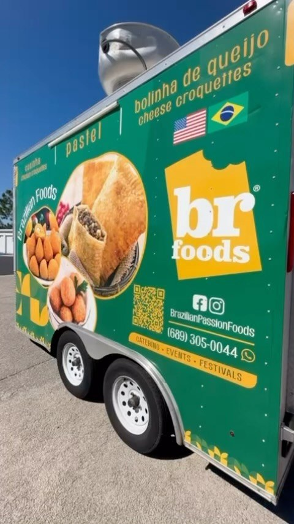
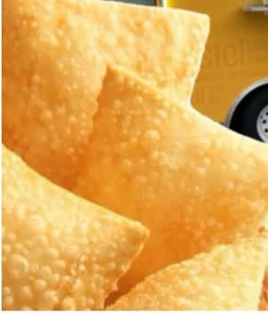
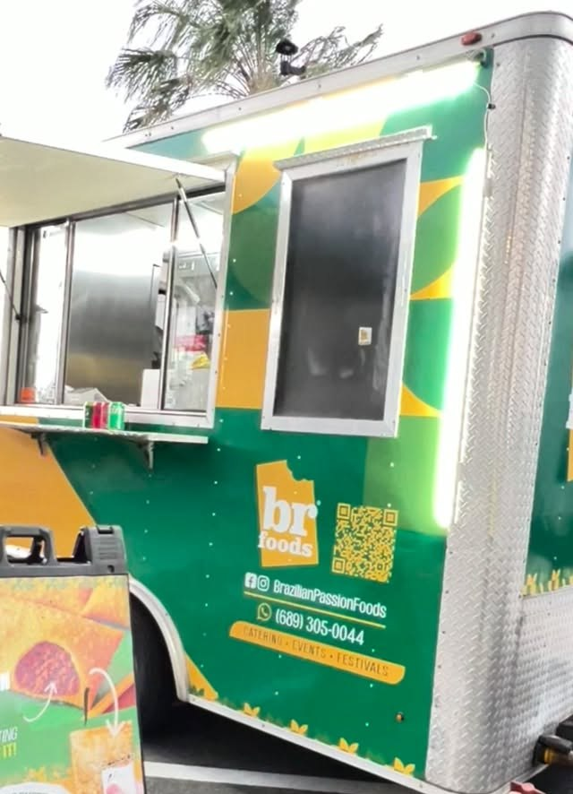
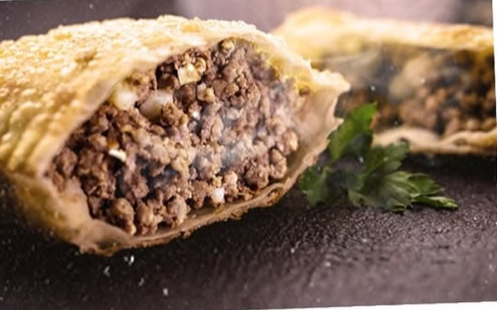

Savory pastel
Seasoned beef. Melty cheese. The classics Brazilians grew up on.


O melhor pastel do Brasil, agora em Orlando.
Order on WhatsApp
Pastel is Brazil's street food. A thin, crisp shell, stuffed and fried the second you ask for it. We park it around Orlando so you don't need a plane ticket to São Paulo.

Every day somewhere new. These are some of our regular stops.
Today's spot goes up on Instagram @brazilianpassionfoods.
We bring the truck to catering, events and festivals. Message us for an order or a date.
Order on WhatsAppOr call (689) 305-0044